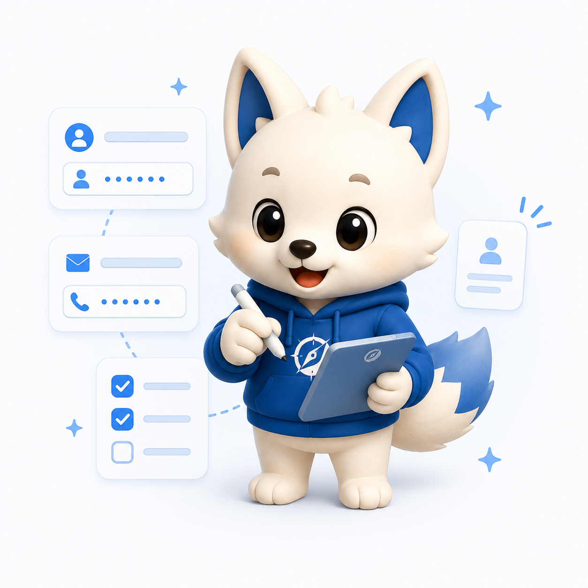
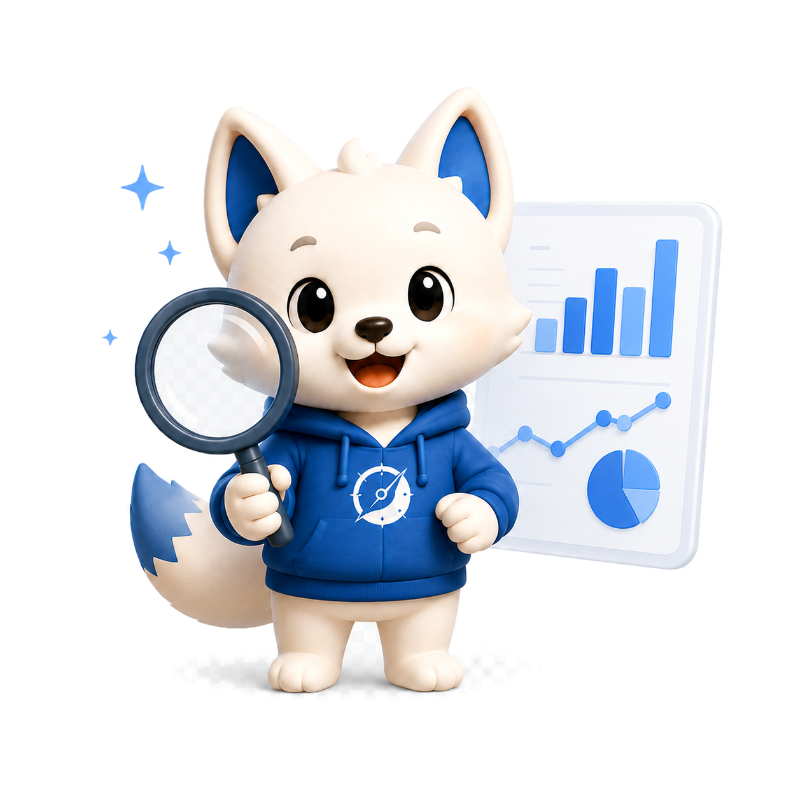
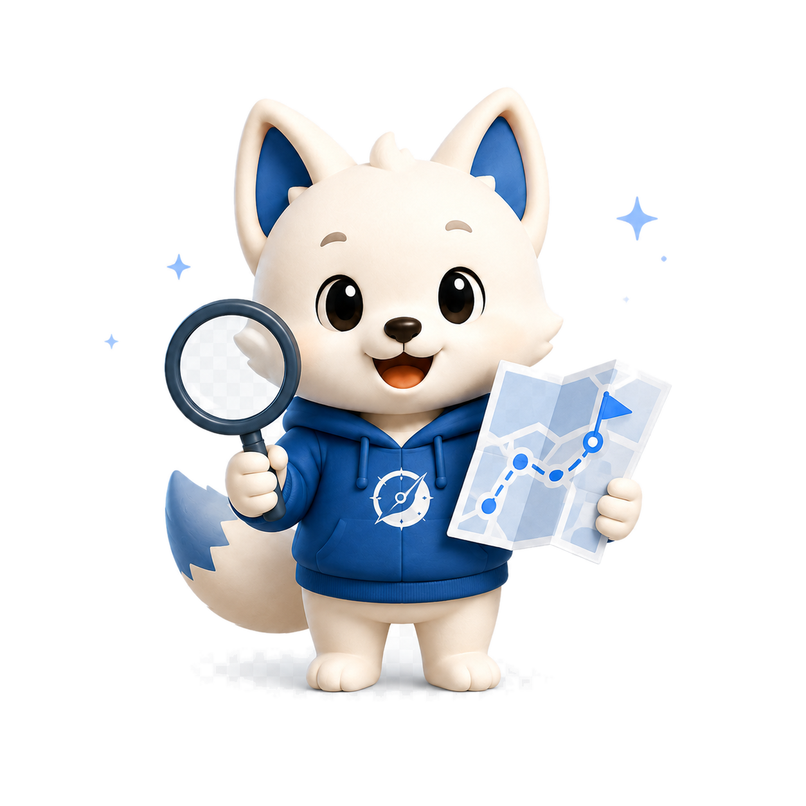
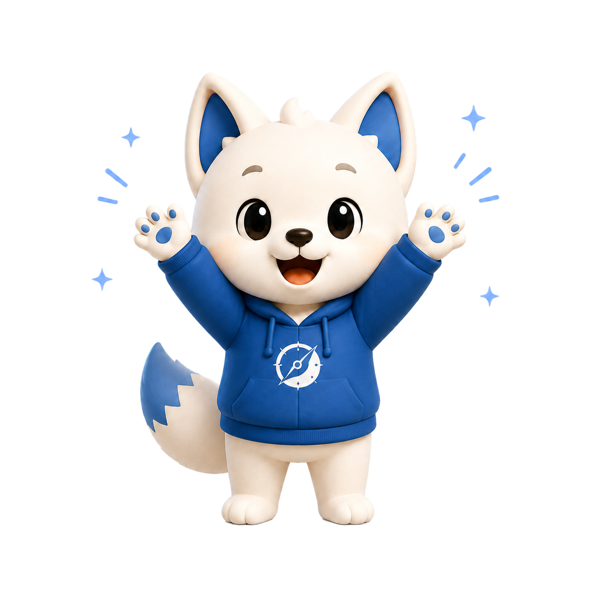

정확한 분석
채용공고, 자소서, 내 정보를 종합 분석해요.
채용공고, 자소서, 내 정보를 종합 분석해요.
4주 단위 준비 플랜으로 체계적으로 준비해요.
면접 유형별 질문과 답변 가이드를 제공해요.
채용 시장 트렌드와 기업 정보를 한눈에 봐요.
간단한 4단계로 나만의 맞춤 면접 로드맵을 받아보세요.

채용공고, 자소서, 내 정보를 입력해요.

Pathi가 지원 정보와 요구 역량을 분석해요.

맞춤 로드맵과 학습 계획을 생성해요.

로드맵을 따라 준비하고 자신 있게 도전해요.